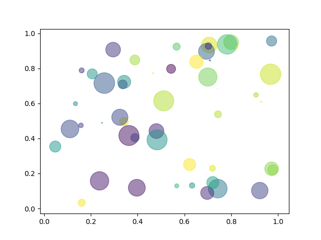
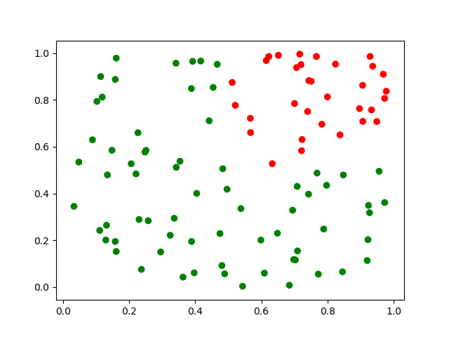

https://matplotlib.org/stable/api/_as_gen/matplotlib.pyplot.scatter.html
A scatter plot of y vs x with varying marker size and/or color. The 'plot' function will be faster for scatterplots where markers don't vary in size or color.
# matplotlib.pyplot.scatter(x, y, s=None, c=None, marker=None, cmap=None, # norm=None, vmin=None, vmax=None, alpha=None, linewidths=None, # verts=None, edgecolors=None, *, plotnonfinite=False, data=None, **kwargs) # # x, y : float or array-like # s: the marker size in points^2, float or array-like # c: the marker color, several possible values; # array-like or list of colors or color # marker: the marker style (default: 'o') # cmap : str or Colormap (default: 'viridis'); # cmap is only used if c is an array of floats # alpha: the alpha blending value, between 0 (transparent) and 1 (opaque) x = np.arange(1, 6) y = x**2 # a numpy function # Doubling width of marker in scatter plot. #area = [10*(4**n) for n in range(len(x))] # [10, 40, 160, 640, 2560] # Doubling area of marker in scatter plot. area = [10*(2**n) for n in range(len(x))] # [10, 20, 40, 80, 160] plt.scatter(x, y, s=area)
https://matplotlib.org/tutorials/introductory/pyplot.html
There are some instances where you have data in a format that lets you access particular variables with strings. For example, with numpy.recarray or pandas.DataFrame. Matplotlib allows you provide such an object with the data keyword argument.
n = 50
datadict = {'a': np.arange(n),
'b': np.arange(n) + 10*np.random.randn(n),
'c': np.random.randn(n), # cmap will be used
'd': np.random.randint(36, 100, n)} # 3 to 5 point radii
plt.scatter('a', 'b', c='c', s='d', data=datadict)
n = 100 # n random points in a unit square [0,1]x[0,1]
df = pd.DataFrame(np.random.rand(n,2), columns=['x', 'y'])
plt.scatter('x', 'y', data=df)
# scatter1.py import numpy as np import matplotlib.pyplot as plt # Fixing random state for reproducibility np.random.seed(19680801) n = 50 x = np.random.rand(n) y = np.random.rand(n) colors = np.random.rand(n) # cmap will be used #colors = np.random.choice(['r', 'g', 'b'], n) area = (30 * np.random.rand(n))**2 # 0 to 15 point radii plt.scatter(x, y, s=area, c=colors, alpha=0.5) # cmap='viridis' #plt.scatter(x, y, s=area, c=colors, cmap='hot', alpha=0.5) plt.show()

# scatter2.py import numpy as np import matplotlib.pyplot as plt # Fixing random state for reproducibility np.random.seed(19680801) n = 100 x = np.random.rand(n) y = np.random.rand(n) colors = ['r' if cond else 'g' for cond in np.logical_and(x > 0.5, y > 0.5)] plt.scatter(x, y, c=colors) plt.show()
